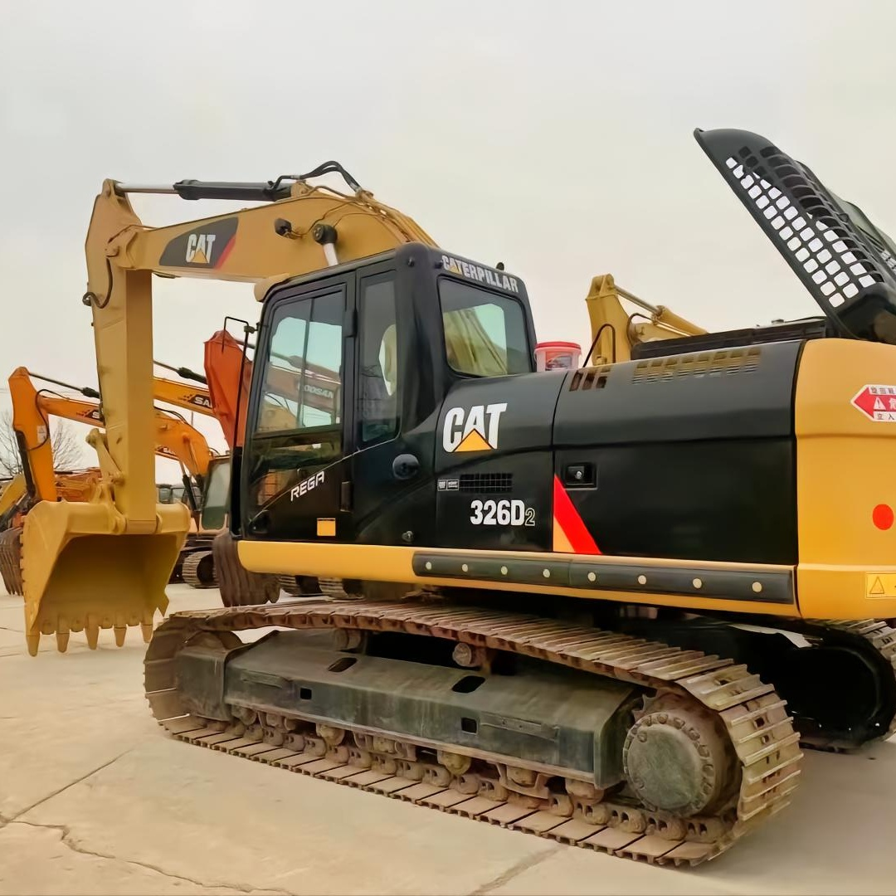

Refurbished Caterpillar Cat 326 Excavator
The Caterpillar Cat 326 Excavator is a mid-size machine designed for high-performance tasks such as digging, grading, lifting, and demolition. Known for its durability, fuel efficiency, and advanced technology, the Cat 326 is an ideal choice for operators and businesses looking for a robust and reliable excavator that can handle a variety of construction and earth-moving tasks.
Honestly, it's almost impossible to buy a brand new excavator from China. They either don't exist or are made in China. If a Chinese seller tells you their Caterpillar/Komatsu/Volvo/Kobelco/Hitachi is brand new, they're lying. Therefore, a refurbished excavator is your best bet.

Here are the detailed specifications for a refurbished Caterpillar Cat 326 excavator, structured for your technical documentation and consistent with your annotated library:
Operating Weight and Dimensions
- Operating Weight: ~25,900–26,000 kg (57,100 lbs)
- Transport Length: ~10.1 meters (33 ft 0 in)
- Transport Width: ~3.2 meters (10 ft 5 in)
- Transport Height: ~2.95 meters (9 ft 8 in)
- Tail Swing Radius: ~3.7 meters
- Track Width: 600–800 mm standard
- Counterweight: ~5.4 metric tons
Engine and Powertrain
- Engine Model: Cat C7.1 (Tier 4 Final / EU Stage V compliant in newer units)
- Rated Power Output: ~201 kW (270 hp) @ 1,800 rpm
- Fuel Tank Capacity: ~410–450 liters
- Travel Speed: 3.5–5.0 km/h
- Swing Speed: ~11 rpm
- Altitude Capability: Up to 3,000 m without derate
Hydraulic System
- Main Pump Type: Electro-hydraulic, load-sensing piston pumps
- Flow Rate: ~2 × 360–380 L/min
- System Pressure: Up to 35 MPa
- Hydraulic Oil Capacity: ~400–450 liters
- Smart Modes:
- Auto Dig Boost
- Heavy Lift Mode
- Auto Hydraulic Warm-Up
Performance Metrics
- Bucket Capacity: 1.2–1.6 m³ (SAE heaped)
- Max Digging Depth: ~6.7–7.0 meters
- Max Reach (Horizontal): ~10.5–11.0 meters
- Max Dump Height: ~6.5–6.8 meters
- Bucket Digging Force: ~180–190 kN
- Arm Digging Force: ~130–140 kN
Cab and Operator Features
- Cab Type: ROPS/FOPS certified
- Display: High-resolution touchscreen with customizable interface
- Controls: Electro-hydraulic joysticks with programmable response
- Comfort: Heated air-suspension seat, climate control, low-noise cab
- Visibility: Panoramic glass, rear and side cameras, LED lighting
Smart Features and Efficiency
- Technology Suite:
- Cat Grade with 2D
- Grade Assist
- Payload Measurement
- Work Tool Recognition
- Operating Modes: Power, Smart, ECO
- Emissions Control: DOC + DPF + SCR (no operator input required)
- Ambient Capability:
- High temp: up to 52°C
- Cold start: down to –18°C
Attachments Compatibility
- Standard Bucket: 1.2–1.6 m³
- Optional Tools: Hydraulic breaker, demolition shear, ripper, compactor
- Quick Coupler: Hydraulic (Cat Pin Grabber or Smart Coupler)
Refurbishment Scope
Refurbished Cat 326 units typically include:
- Engine Overhaul: Turbocharger, injectors, cooling system, emissions service
- Hydraulic Restoration: Pump recalibration, valve block testing, hose replacement
- Electrical Diagnostics: Monitor, sensors, wiring harness, telematics
- Cab Reconditioning: Seat, joysticks, HVAC, touchscreen UI, repainting
- Structural Repairs: Boom/bucket welding, bushing replacement, undercarriage rebuild
Overview of the Caterpillar Cat 326 Excavator
The Caterpillar Cat 326 is designed to deliver powerful digging and lifting capabilities, making it a versatile machine for various industries, including construction, roadwork, landscaping, and utility installation. It balances excellent performance with enhanced fuel efficiency and operator comfort, ensuring it can perform under tough working conditions.
Caterpillar has engineered the Cat 326 to be an efficient and dependable option for mid- to large-scale excavation and earth-moving projects. With the Cat 326's high lifting capacity, powerful hydraulics, and fuel-efficient engine, it's well-suited to tackle everything from simple grading work to complex, large-scale operations.
Key Specifications of the Caterpillar Cat 326
-
Operating Weight: Approximately 26,000 - 32,000 kg (57,320 - 70,540 lbs)
-
Engine Power: 160 kW (214 hp)
-
Maximum Digging Depth: Around 6.5 meters (21.3 feet)
-
Max Reach: Up to 9.0 meters (29.5 feet)
-
Bucket Capacity: Typically 1.2 to 2.0 cubic meters (42.3 to 70.6 cubic feet)
-
Fuel Tank Capacity: About 400 liters (105.7 gallons)
-
Travel Speed: Maximum of 5.5 km/h (3.4 mph)
These specifications demonstrate the Cat 326's ability to perform powerful tasks like heavy lifting, large-scale grading, and deep digging, while also offering a reasonable level of mobility and efficiency.
Performance and Fuel Efficiency
One of the standout features of the Caterpillar Cat 326 is its ability to balance outstanding performance with cost-saving fuel efficiency. The machine’s high hydraulic performance, combined with an energy-efficient engine, enables the Cat 326 to deliver top-tier results without excessive fuel consumption.
Key Performance Features:
-
Hydraulic System: The Cat 326 features advanced hydraulics that deliver smooth and precise control, particularly when lifting or digging in tough or confined spaces. Its powerful hydraulic pumps ensure fast cycle times, making it a highly productive machine.
-
Fuel Efficiency: The Cat 326 has been optimized to reduce fuel consumption while maintaining its powerful performance. Caterpillar’s advanced fuel-efficient engine technology allows operators to save on fuel costs while ensuring the machine runs at peak performance during heavy-duty tasks.
-
Enhanced Productivity: With its improved cycle times, powerful digging forces, and high lifting capabilities, the Cat 326 increases productivity on demanding job sites. It can handle large quantities of material in a short amount of time, which reduces the overall duration of projects.
-
Smooth and Precise Operation: The hydraulic system of the Cat 326 provides excellent precision, enabling operators to perform delicate tasks, such as grading or lifting small objects, with ease. This precision reduces the risk of errors and increases overall job site efficiency.
Durability and Reliability
Caterpillar is known for producing equipment that can withstand tough environments, and the Cat 326 is no exception. With its high-quality components, robust structure, and long-lasting components, the Cat 326 is built to perform reliably for years.
Durability Features:
-
Heavy-Duty Undercarriage: The undercarriage of the Cat 326 is designed to provide stability and durability on uneven and rough terrain. The reinforced tracks and robust frame allow the machine to perform well even under challenging working conditions.
-
Reinforced Boom and Stick: The boom and stick of the Cat 326 are made with durable materials that resist wear and tear, even when working in harsh conditions. These reinforced components are designed to withstand the stress of heavy lifting and digging operations.
-
High-Quality Components: Caterpillar uses top-tier materials and components to ensure that the Cat 326 lasts through extended periods of heavy use. Its engines, hydraulic systems, and drivetrain are built to endure tough environments, minimizing downtime and maintenance costs.
Operator Comfort and Safety
Operator comfort is a priority in Caterpillar excavators, and the Cat 326 incorporates several features that promote productivity and safety for the operator. The machine's cabin is spacious, offering excellent visibility and user-friendly controls for a comfortable work experience.
Comfort and Safety Features:
-
Spacious and Comfortable Cabin: The cabin of the Cat 326 is ergonomically designed to reduce operator fatigue. It features an adjustable seat, air conditioning, and an intuitive control layout, ensuring a comfortable environment for the operator during long shifts.
-
Improved Visibility: The Cat 326 has large windows and well-positioned mirrors, offering excellent visibility of the work area. The high visibility reduces blind spots, increasing safety and reducing the risk of accidents.
-
Advanced Safety Features: The Cat 326 is equipped with safety features like ROPS (Roll-Over Protective Structure) and FOPS (Falling Object Protective Structure) to protect the operator in case of accidents. An optional rearview camera and other safety options are also available for added security.
Versatility and Attachments
The Caterpillar Cat 326 offers a high level of versatility, thanks to its compatibility with a wide variety of attachments. Whether it’s for lifting, digging, or handling materials, the Cat 326 can be customized with different tools to handle various tasks on the job site.
Common Attachments for the Cat 326:
-
Buckets: Available in different sizes for various types of digging, such as general-purpose, heavy-duty, and rock buckets.
-
Hydraulic Hammers: Ideal for breaking rock, concrete, or asphalt in demolition projects or road construction.
-
Augers: Perfect for drilling holes for foundations, poles, or other types of underground work.
-
Grapples: Used for lifting and handling large materials like logs, debris, and scrap metal.
-
Quick Couplers: Allow quick attachment changes, improving job site efficiency and reducing downtime.
These attachments give the Cat 326 the flexibility to take on a variety of applications, making it a cost-effective solution for a range of industries.
Advantages of Purchasing a Refurbished Caterpillar Cat 326 Excavator
Opting for a refurbished Caterpillar Cat 326 Excavator can offer numerous advantages, including significant cost savings while maintaining the high performance and reliability that Caterpillar is known for.
Benefits of a Refurbished Cat 326:
-
Cost Savings: Refurbished Cat 326 excavators are much more affordable than brand-new models, allowing businesses to save money without sacrificing performance or reliability.
-
Thorough Inspection and Reconditioning: Refurbished units are thoroughly inspected, repaired, and reconditioned to meet Caterpillar’s high standards, ensuring they perform just like new machines.
-
Warranty: Many refurbished Cat 326 excavators come with warranties, offering protection against unexpected repair costs and providing peace of mind.
-
Environmentally Friendly: Purchasing a refurbished unit helps reduce environmental impact by extending the life of existing equipment and reducing the demand for new manufacturing.
Maintenance Tips for the Caterpillar Cat 326 Excavator
Proper maintenance is essential to keep your Caterpillar Cat 326 Excavator running at peak performance. Regular care ensures the longevity of the machine and reduces the risk of costly repairs.
Key Maintenance Tips:
-
Hydraulic System: Regularly inspect hydraulic lines, pumps, and hoses for leaks or wear. Ensure hydraulic fluid levels are checked and filters are replaced regularly.
-
Engine Care: Follow recommended intervals for oil changes, coolant checks, and air filter replacement. This ensures optimal engine performance and helps prevent overheating.
-
Undercarriage Maintenance: Frequently inspect the undercarriage for damage and wear. Keep the tracks clean and well-lubricated to reduce the risk of costly repairs.
-
Cooling System: Check the radiator and cooling lines to ensure there is no debris or damage, which can lead to engine overheating.
Conclusion
The Caterpillar Cat 326 Excavator is a robust and versatile machine that offers impressive performance in a wide range of construction and excavation tasks. Whether you are working in construction, roadwork, or landscaping, the Cat 326 provides excellent value and reliability. Choosing a refurbished Cat 326 offers significant cost savings while still ensuring top-notch performance.
With proper maintenance, a refurbished Cat 326 can continue to serve your business for years, boosting productivity and lowering operating costs. By investing in this machine, you gain a high-performing piece of equipment with the added benefit of a reduced environmental impact and lower overall cost.
Our Commitment
- 2 years / 4000 hours warranty.
- EPA certified.
- No sweatshop labor.
Contacts

- [email protected]
- Youtube Instagram Facebook
- Navigation: G206 (Sishu Bridge) in Changfeng County, Hefei City, Anhui Province, 200 meters north to the east